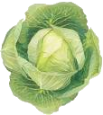

belarusweb.net
Основы создания сайтов!
Учебный сайт на HTML+CSS!
Примеры верстки
Стартовая страница
Пустая страница
Шрифты и текст
Использование списков
Верстка таблиц
Работа с изображениями
Карта-изображение
Создание форм
Примеры анимации

Пусто, выросла капуста!!!